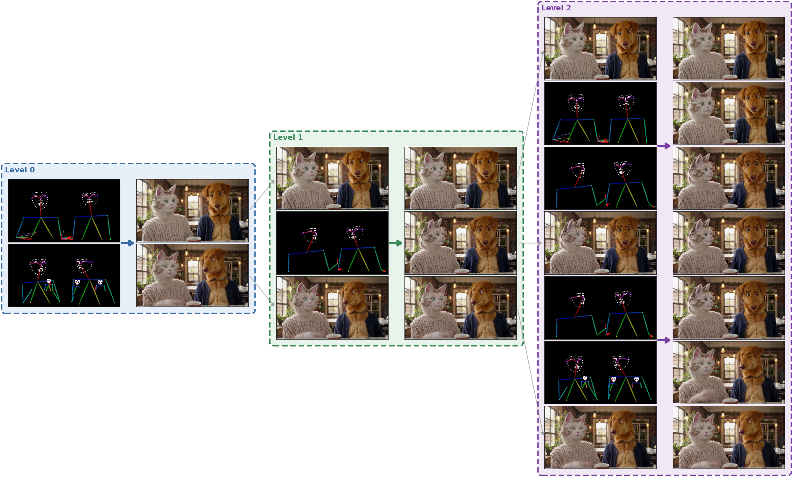
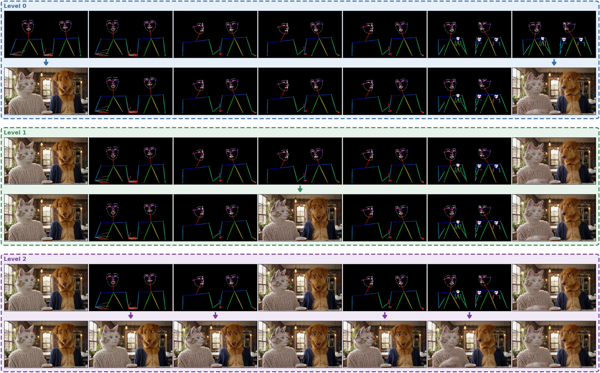
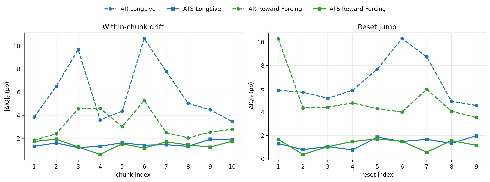
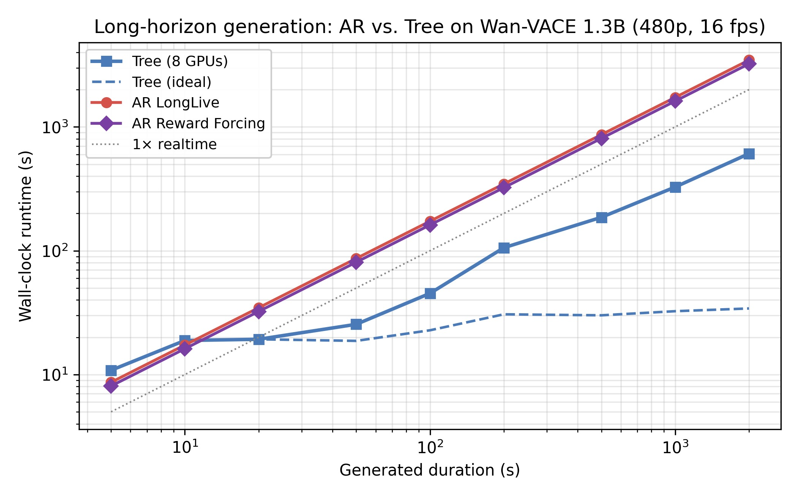

Long-horizon video generation suffers from two intertwined issues. First, there is drift, where video quality degrades over time. Second, there are continuity issues which manifest as object permanence failures, or improperly rendering transient content (e.g., an object that appears in non-consecutive frames changing color or style). Recent work has focused on autoregressive distillation techniques that attack both problems simultaneously. We instead choose to focus on drift directly and introduce Anchored Tree Sampling (ATS): a training-free, inference-time scheduler that replaces left-to-right rollout with sparse-to-dense, anchor-bounded imputation organized as a tree. A root call produces sparse anchors over the full horizon, recursive refinement generates intermediate anchors, and final leaf spans are synthesized between neighboring anchors. This reduces the critical path from K sequential rollout steps to L + 1 tree-hierarchical steps and converts horizon-compounding drift into anchor-bounded drift. We focus on V2V generation in the static-camera regime, where sparse anchors over the horizon are well approximated by the dense conditioning signal, and the base model can produce them without retraining. We evaluate ATS against two contemporary autoregressive baselines on Wan 2.1 + VACE, across five conditioning modalities (inpainting, outpainting, edge, pose, depth). We show that ATS outperforms both competitors in overall quality, as well as in drift prevention. We additionally demonstrate stable ≥ 40-minute generation on LTX-2.3 across the same five modalities. We conclude by proposing a path forward to extend ATS to arbitrarily long T2V generation, as well as the dynamic-camera and multi-shot regimes.
ATS replaces left-to-right rollout with sparse-to-dense, anchor-bounded imputation organized as a tree. A conditioning-only root call emits sparse anchors over the full horizon, optional refinement levels insert intermediate anchors between them, and leaf calls densely fill each interval bracketed by a pair of anchors. Every non-root call is a bidirectional infill bounded by both endpoints, so errors cannot compound across the horizon. Sibling calls within a level are conditionally independent, so the critical path collapses from K sequential chunks to L + 1 hierarchical steps, with L = O(log T). The construction is training-free: any pretrained two-sided V2V generator (e.g. Wan 2.1 + VACE, LTX-2.3) serves as the base model.


Long-form quality and drift on Wan 2.1 + VACE, averaged across five 30-minute source videos. Each distilled checkpoint is run twice: rolled out autoregressively (AR) and scheduled inside the tree (ATS). Global AQ and IQ are means over 60 uniformly-sampled keyframes; |ΔM|c is the mean within-chunk drift over the 10 cache-reset windows; |ΔM|r is the mean discontinuity across the 9 reset boundaries.
| Checkpoint | Sampler | Global ↑ | Chunk drift ↓ | Reset jump ↓ | |||
|---|---|---|---|---|---|---|---|
| AQ | IQ | |ΔAQ|c | |ΔIQ|c | |ΔAQ|r | |ΔIQ|r | ||
| LongLive | AR | 55.69 | 61.82 | 3.73 | 5.94 | 4.32 | 6.54 |
| ATS (Ours) | 59.69 | 68.46 | 2.51 | 1.50 | 1.77 | 1.35 | |
| Reward Forcing | AR | 52.78 | 63.48 | 3.37 | 3.15 | 3.85 | 5.08 |
| ATS (Ours) | 58.51 | 69.64 | 2.44 | 1.43 | 2.08 | 1.23 | |


30-minute Wan 2.1 + VACE reels. For each modality we show the source clip alongside two samplers per distilled checkpoint (LongLive and Reward Forcing): autoregressive rollout (AR) and ATS on the same checkpoint.
@article{bendel2026ats,
title = {Goodbye Drift: Anchored Tree Sampling for Long-Horizon
Video-to-Video Generation},
author = {Bendel, Matthew and Bailey, Stephen W. and Vaidya, Mithilesh
and Badam, Sumukh and He, Xingzhe},
year = {2026},
institution = {Descript, Inc.},
}